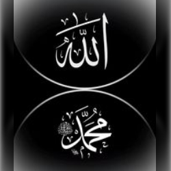

Tentang Website & Pengelola
Website Cahaya Iman dibuat sebagai jembatan teknologi untuk mempermudah umat mengakses ajaran Islam sehari-hari secara praktis, modern, dan tanpa kehilangan esensi tradisinya.
Profil Pengembang
Proyek ini dikembangkan dan dikelola oleh Mas Aga. Berangkat dari keinginan untuk mengintegrasikan kebutuhan spiritual dalam ritme kehidupan digital yang cepat, platform ini dibangun dengan prinsip aksesibilitas tinggi dan desain yang menenangkan pikiran.
Visi & Misi
- ✓ Menyediakan konten Islami yang akurat dan mudah dipahami
- ✓ Mengintegrasikan teknologi modern dengan nilai-nilai tradisional
- ✓ Menciptakan pengalaman pengguna yang nyaman dan menenangkan
Hubungi Kami
Jika Anda memiliki pertanyaan, saran, atau ingin berkontribusi, silakan hubungi kami melalui halaman Kontak.